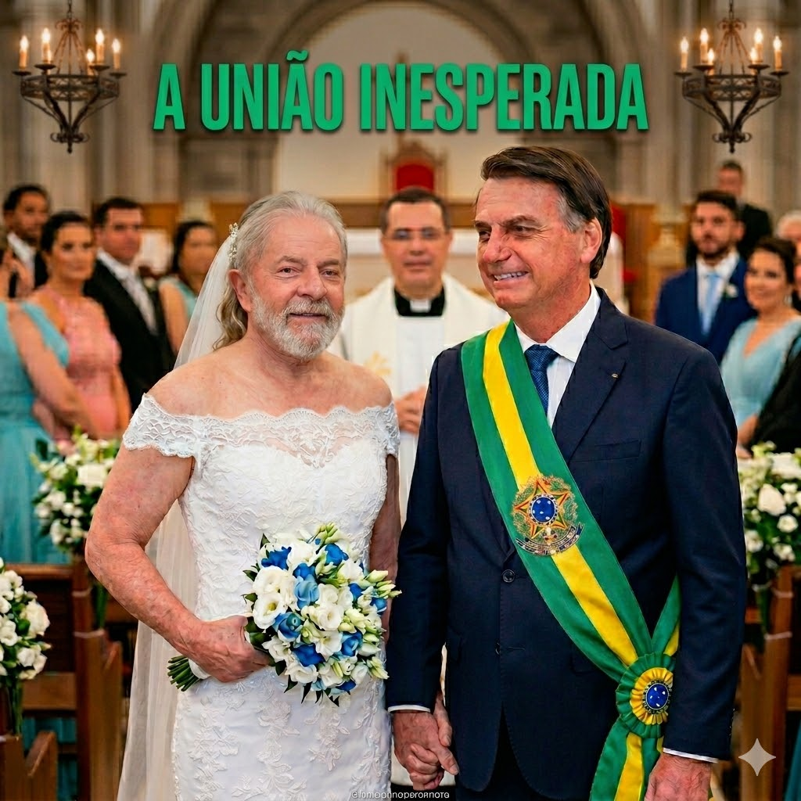
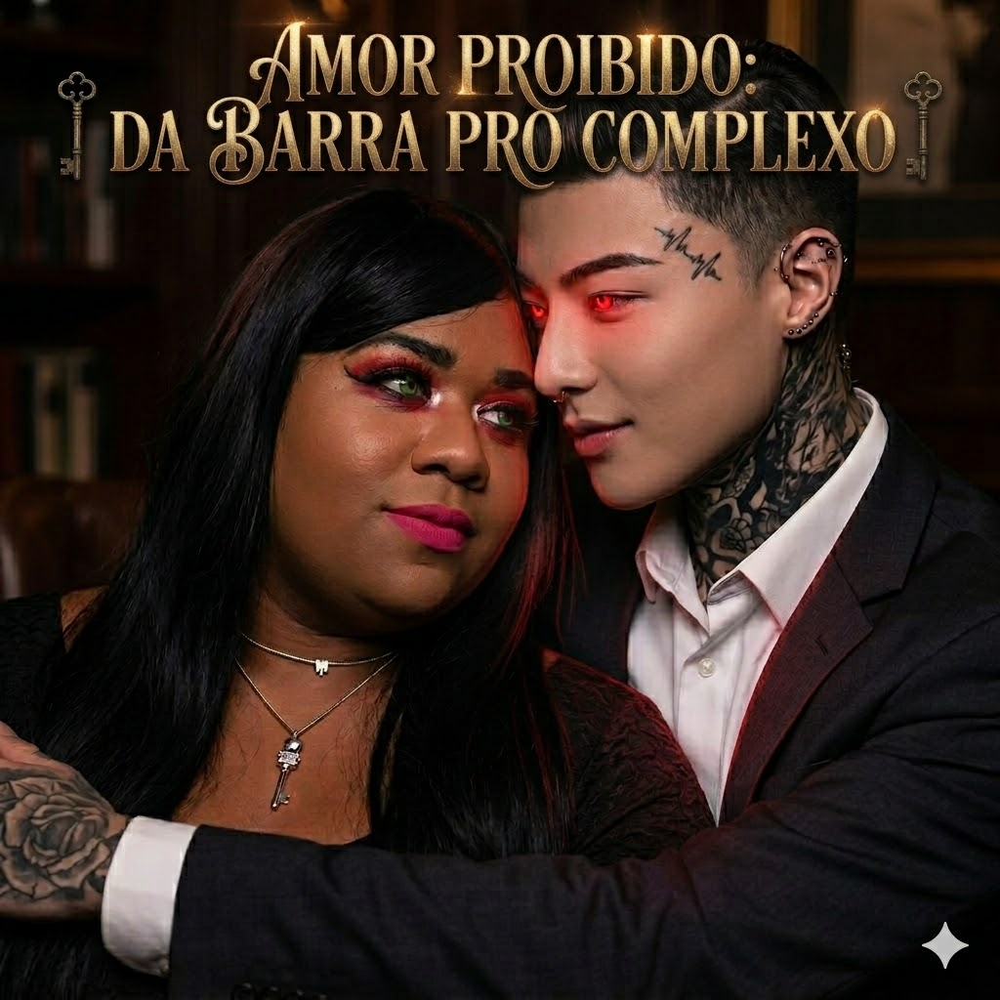
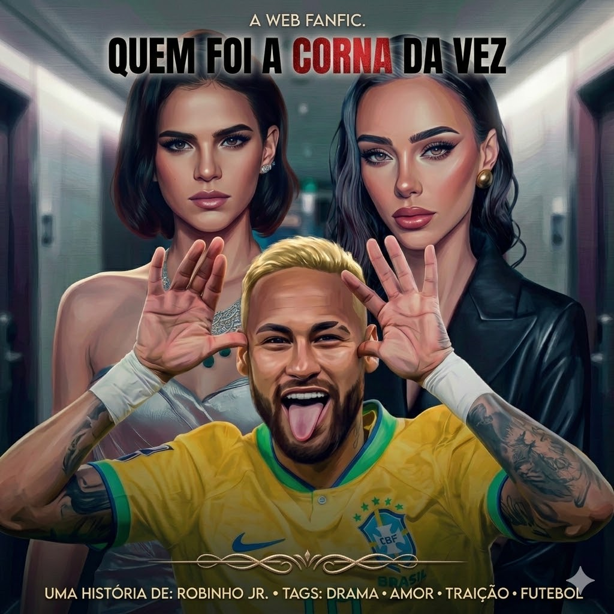

Os prisioneiros: A união inesperada
Romance • DramaLula chocou o país ao subir ao altar de vestido de noiva, enquanto Bolsonaro, de terno e faixa presidencial, segurava sua mão com orgulho. Atrás dos sorrisos, dois inimigos históricos escondem um segredo impossível de ocultar, transformando a rivalidade política em um drama de amor proibido.

Amor Proibido: Da Barra pro Complexo
Dark RomanceYgona Moura era a patricinha da Barra, famosa pela maquiagem rosa e o bordão "Quem é que manda? Ygona!". Do outro lado do Rio, Jungkook era o dono do morro mais temido da cidade, com tatuagens e um olhar vermelho intimidador — que amolecia toda vez que via os stories dela.

Quem foi a corna da vez?
Fantasia • MistérioNeymar vive no centro dos holofotes e dos corações partidos, o eterno moleque deixa um rastro de polêmicas entre Bruna Marquezine e Bruna Biancardi. Em um jogo de aparências e traição, o mistério da vez é descobrir qual delas cansou de ser corna e coadjuvante no drama do craque das lesões.

A sombra da obsessão
Dark Fic • toxicEle a observa através das telas. Ele conhece cada passo, cada rotina e cada fraqueza dela. O que começou como uma stalkeada logo se transforma em uma perseguição real. Patricia precisa lutar por sua vida para não se tornar mais uma vítima de bob o esponja, seu perseguidor obcecado .